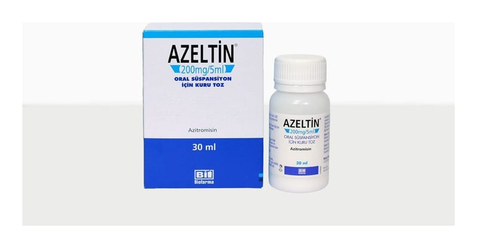

Azeltin 200 mg/5 ml Oral Süspansiyon İçin Kuru Toz, 30 ml

Ne için kullanılır
KT · Bölüm 1AZELTİN®oral süspansiyon hazırlanması için, beyaz renkte, ahududu-muz kokulu, homojen tozdur. 15 ml ve 30 ml’lik beyaz plastik şişelerde bulunur, her ölçek (5 mL) 209,64 mg azitromisin dihidrat içerir.
AZELTİN®makrolid olarak adlandırılan antibiyotik grubundandır. Bazı bakterilerin ve diğer mikroorganizmaların neden olduğu, aşağıda örnekleri bulunan enfeksiyonların tedavisinde kullanılır: • Göğüs, boğaz ve burun enfeksiyonları (bronş iltihabı, akciğer iltihabı ve sinüzit gibi) • Streptococcus pyogenes’in neden olduğu bademcik iltihabı (tonsilit), boğaz ağrısı (farenjit) tedavisinde penisilin alerjisi varlığında
• Akut kulak enfeksiyonları (akut otitis media) • Deri ve yumuşak doku enfeksiyonları (apse veya çıban gibi) • Chlamydia adlı organizmanın neden olduğu cinsel yolla bulaşan hastalıklar • Haemophilus ducreyi isimli bir mikroorganizmanın neden olduğu yumuşak doku ülseri ve çoğul dirençli olmayan Neisseria gonorrhoeae isimli bir mikroorganizmanın yol açtığı, eşlik eden başka enfeksiyonun olmadığı cinsel yolla bulaşan enfeksiyonlar